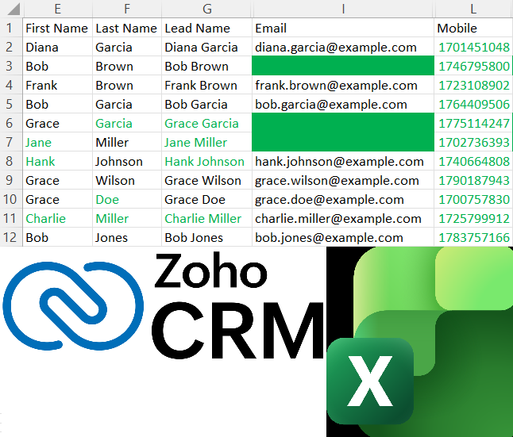

Shak Adefuwa
Science Teacher
Digital Skills Portfolio
An experienced science teacher with strong digital skills, using technology to improve organisation, communication and student learning.
Digital Skills Portfolio
An experienced science teacher with strong digital skills, using technology to improve organisation, communication and student learning.
A practical example of how I use Excel in the classroom: recording student grades, automating calculations and visualising class performance.
While teaching science in Abu Dhabi, I built Excel workbooks to track assessment data, calculate grades automatically, and present student progress clearly to pupils, parents and school leadership.
View full projectPractical ways I use digital tools to support teaching, learning and classroom organisation.
Structured spreadsheets with automated calculations, conditional formatting and grade boundaries, keeping assessment data accurate and up to date.
Tracking individual and class-wide progress over time, flagging students who need intervention and informing differentiated lesson planning.
Clear charts and dashboards that make performance data accessible, especially useful when communicating with parents across language barriers.
Engaging presentations, differentiated materials and interactive content designed to support varied proficiency levels in the classroom.
Experienced in delivering both fully online and hybrid lessons, using digital platforms to maintain engagement, monitor participation and support effective learning both in the classroom and remotely.
Delivered curricula designed entirely for digital learning, where lessons, resources, assessments and student activities were accessed and completed through laptops and online learning platforms.
Examples demonstrating my digital skills through professional development, with projects from both my teaching career and independent learning.

A classroom gradebook for collecting assessment data and calculating final grades, built and used while teaching science in Abu Dhabi.
.png)
Built an interactive dashboard by cleaning raw data with SQL and visualising trends in Power BI. This demonstrates the same data-handling and reporting skills I use to track and present student performance.

Designed a dashboard to monitor key metrics and identify trends over time, using the same analytical approach I apply when reviewing assessment data and class outcomes.

Analysed survey responses to uncover patterns and present findings clearly, similar to how I interpret student feedback and assessment data to inform teaching decisions.

Cleaned and validated messy spreadsheet data before importing into a CRM system, reflecting the careful data management required when handling student records and contact information.
Name: Shak (Shakirudeen) Tony Adefuwa
Nationality: British
Location: London
LinkedIn: @ShakAdefuwa
Dedicated and adaptable teacher with full-time international classroom experience, now seeking to build a long-term teaching career in the UK and work towards Qualified Teacher Status. Experienced in teaching across a range of settings, including in-person, fully online and hybrid delivery.
A strong communicator with excellent classroom presence, confident in managing behaviour effectively and creating a positive learning environment that enables pupils to succeed. Committed to high standards of teaching, professional development, and student achievement. Uses digital tools to support organisation, monitor student progress and inform teaching practice.
Just IT | London
Data analysis, visualisation and database management using Power BI, SQL, Excel and Python.
University of Reading
Ministry of Education | Abu Dhabi, UAE
St Joseph's College Croydon | London, UK
Science Teacher
An experienced educator with strong digital literacy and a commitment to continuous learning. I use technology to improve organisation, communication and learning, and I'm keen to bring these skills to a UK school.